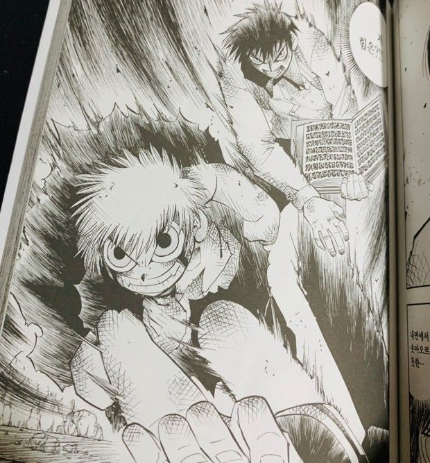
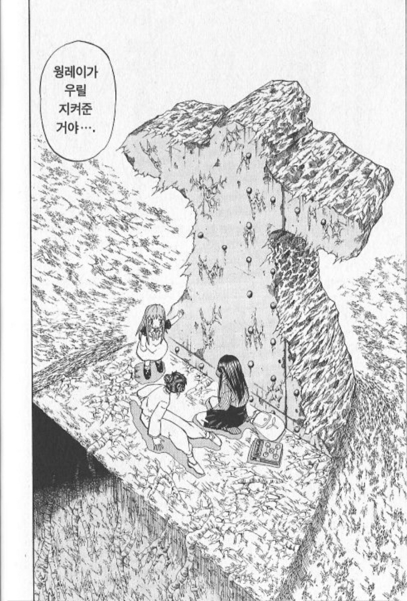

어릴때 봤을수도 있는 '금색의 갓슈' 입니다.
작가는 '라이쿠 마코토' 이며 2001년~2008년까지 8년간 연재하며 33권으로 완결낸 만화입니다. (작가는 갓슈 이후로 연재한 모든 만화가 흥행하지 못 했습니다..)
(E북으로는 16권 완결입니다.)
(완전판은 정발중입니다.)
2022년인 지금 보면 그림체가 굉장히 투박하고 코드가 잘 안 맞을수도 있을 것 같습니다. 근데 제 생각에는 소년만화의 정석이고 6번은 넘게 정주행한 소년만화라서 추천합니다.
설정은 단순합니다.
1000년마다 한 번씩 마계의 왕을 정하기 위해 마물의 아이 100명을 인간세계로 보내게 됩니다. 이 마물의 아이들이 자신들의 책을 인간에게 맡기며 인간과 파트너를 맺고 서로 싸우다가 최후의 1인이 마계의 왕이 된다는 이야기입니다.
(이런 책들을 들고 주문을 외우며 싸웁니다.)
주인공은 갓슈, 키요마로입니다.
언뜻 보면 그림체도 투박하고 유치할 수도 있는데 작가의 연출과 전투장면에도 나오는 개그센스들이 천재적입니다.


(진지한 전투씬에 이런 장면을 넣습니다.)
(개그캐로 유명한 빅토림좌)
(무적의 포르고레)
소년만화의 스토리 흐름이 보통 '고난을 겪는 인물이 있음 > 전투를 통해 구해줌 > 감동' 이렇게 되는데 이런 단순한 흐름이 반복되면 독자들은 지루해지고 피로해집니다. 그 피로와 지루함이 심해지면 중도 하차를 하게 되구요. (저도 블랙 클로버와 나히아를 중도 하차했습니다.)
하지만 이 만화는 그런 지루함을 느낄 새가 없습니다.
배틀을 벌여야하는 마물들의 이야기를 다양한 성격, 상황에 처한 인간 파트너와 연결하여 표현하는 드라마가 기존의 인물 혼자만의 이야기를 보여주던 것과 비교하여 다채로운 점도 한 몫 합니다.
또한 위에서 말한 것처럼 작가 특유의 개그 센스가 투박한 그림체와 맞물려 시너지를 내고, 전투 장면에서도 선이 굵고 거칠면서 박력있게 그려내어 전투장면이 굉장히 실감납니다.

(웡 레이 ㅜㅜㅜㅜ)
이런 식으로 전부 감동적입니다.ㅜ
누적 판매부수는 2200만부로 메가히트를 했으며 14년이 지난 2022년 3월부터 월간 연재로 '금색의 갓슈 2'를 연재하기 시작했습니다.
개인적으로 소년만화 원탑이라고 생각하기 때문에 심심하신 분들은 보시는 것도 좋을 것 같습니다.
후원댓글 6개
댓글 6개 ▼